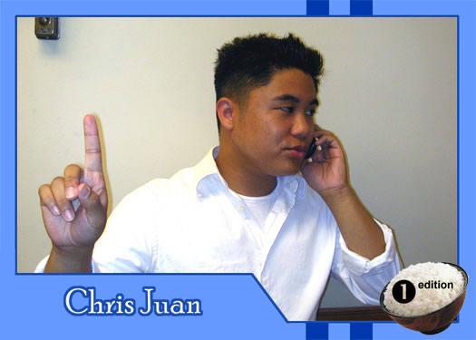

|
Why did you get involved with Theatre Rice? I did a lot of theatre back in high school and have been kinda deprived of it over the last two years, because my previous school had a conservatory (which meant if you weren't a major, you couldn't do anything) and the previous on-campus theatrical group had folded a few years back. Plus I worked a lot with the Asian and Filipino organizations and concluded the following from that experience: Asians are cool. When I decided to come to Berkeley, I searched around for organizations and found Theatre Rice: Theatre AND Asians. Wow. Blew my mind being the sheltered idwesterner that I am. I hope to be a voice for all sheltered Asianjunior transfer students from Ohio that relocated to California (or am I the only one??? *gasp*). What do you hope to gain from TR? I hope to become a better performer, and meet some cool people in the process (see above... Asians = COOL, Asians + Theater = UBER-COOL). I hope to gain a better understanding of issues facing the APIA community (like Prop 54? NO, really?) and help dispel the myth that Asians aren't a bunch of nerdy overachievers (or maybe we are... hmm...) and that we, too, can be entertaining. Oh yeah, I want to dress as cool as Reggie. Yeah... What do you like to do in your spare time? Umm... chat with people on AIM, update my Xanga and reading other people's blogs, write testimonials on Friendster, ya know... (actually I do! don't laugh...) For the time being, Theatre Rice is soaking up that free time like a nice, flavorful menudo sauce. I enjoy the occasional night out on the town, as well... What are your favorite films or t.v. shows? The only show I've been really fanatic about is American Idol (yeah, along with the rest of America)... I'm Aiken 4 Clay! I'll admit I'm kind of a reality show enthusiast as well. Movies: Moulin Rouge, Chicago, Requiem for a Dream, and many more... If you had a quote that defines how you live life, what would it be? "Come what may." Life's about taking risks. Otherwise, I probably wouldn't be in California right now. (oh yeah, and props to my DP peeps back in the nasty 'Nati!) |